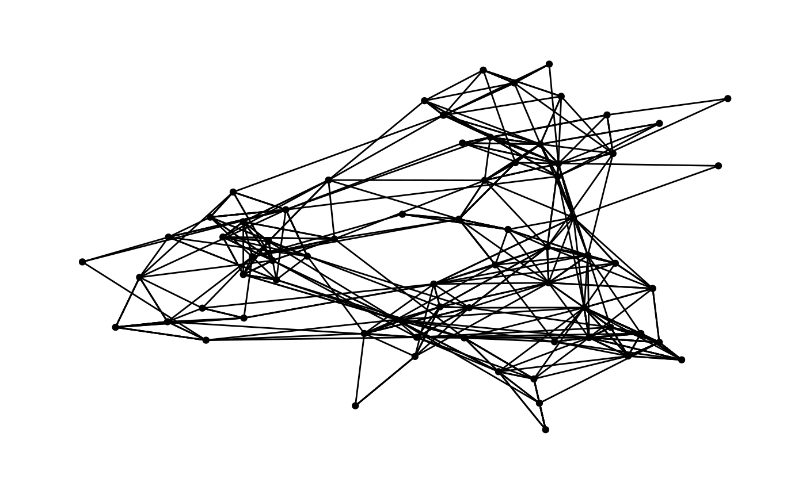

When plotting graphs, networks, and trees the coordinate values are often of
no importance and axes are thus a distraction. ggraph comes with a
build-in theme that removes redundant elements in order to put focus on the
data. Furthermore the default behaviour is to use a narrow font so text takes
up less space. Theme colour is defined by a background and foreground colour
where the background defines the colour of the whole graphics area and the
foreground defines the colour of the strip and border. By default strip and
border is turned off as it is an unnecessary element unless facetting is
used. To add a foreground colour to a plot that is already using
theme_graph the th_foreground helper is provided. In order to
use this appearance as default use the set_graph_style function. An
added benefit of this is that it also changes the default text-related values
in the different geoms for a completely coherent look.
unset_graph_style can be used to revert the defaults back to their
default settings (that is, they are not necessarily reverted back to what
they were prior to calling set_graph_style). The th_no_axes() helper is
provided to modify an existing theme so that grid and axes are removed.
theme_graph(
base_family = "Arial Narrow",
base_size = 11,
background = "white",
foreground = NULL,
border = TRUE,
text_colour = "black",
bg_text_colour = text_colour,
fg_text_colour = text_colour,
title_family = base_family,
title_size = 18,
title_face = "bold",
title_margin = 10,
title_colour = bg_text_colour,
subtitle_family = base_family,
subtitle_size = 12,
subtitle_face = "plain",
subtitle_margin = 15,
subtitle_colour = bg_text_colour,
strip_text_family = base_family,
strip_text_size = 10,
strip_text_face = "bold",
strip_text_colour = fg_text_colour,
caption_family = base_family,
caption_size = 9,
caption_face = "italic",
caption_margin = 10,
caption_colour = bg_text_colour,
plot_margin = margin(30, 30, 30, 30)
)
th_foreground(foreground = "grey80", fg_text_colour = NULL, border = FALSE)
th_no_axes()
set_graph_style(
family = "Arial Narrow",
face = "plain",
size = 11,
text_size = 11,
text_colour = "black",
...
)
unset_graph_style()The size to use for the various text elements. text_size will be used as geom defaults
The colour to use for the background. This theme sets all
background elements except for plot.background to element_blank so
this controls the background for all elements of the plot. Set to NA
to remove the background (thus making the plot transparent)
The colour of foreground elements, specifically strip and
border. Set to NA to remove.
Logical. Should border be drawn if a foreground colour is provided?
The colour of the text in the various text elements
The margin to use between the text elements and the plot area
The plot margin
The font to use for the different elements
The fontface to use for the various text elements
Parameters passed on the theme_graph
library(tidygraph)
graph <- as_tbl_graph(highschool)
ggraph(graph) + geom_edge_link() + geom_node_point() + theme_graph()
#> Using "stress" as default layout
